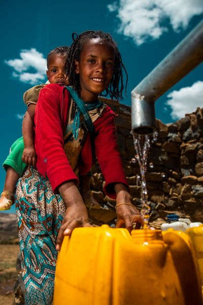

Give simply
A small student donation can be an easy first step toward supporting clean water solutions.
Small action. Real impact.
Turn a small everyday expense into meaningful support for clean water projects and see the impact your contribution can make.
Donate Your Coffee Money
Why water matters
A small student donation can be an easy first step toward supporting clean water solutions.
charity: water shares project proof through updates, photos, and GPS information.
Invite friends, campus groups, and classmates to turn everyday choices into collective action.
Transparent giving
charity: water states that 100% of public donations directly fund clean water projects, while private donors support operating costs.
FAQs
Yes. Smaller gifts can combine with support from many other donors and campus communities to help fund larger clean water efforts.
charity: water says public donations directly fund clean water projects, with project reporting designed to make impact visible.
Yes. Students can also start fundraisers, share the cause, and encourage their campus communities to participate.
Ready to make your coffee money count?